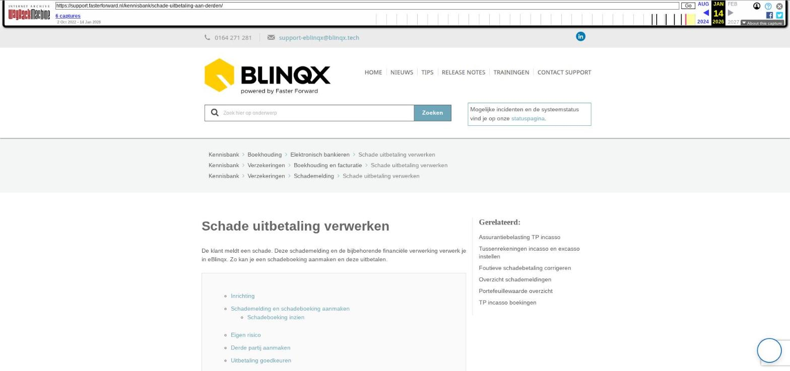

PDF documenten splitsen en samenvoegen vanuit een dossier

Tekstinhoud
PDF documenten splitsen en samenvoegen vanuit een dossier
Vanuit het tabblad documenten in het dossier is het mogelijk om documenten handmatig samen te voegen of te splitsen.
Let op! Alleen PDF documenten kunnen samengevoegd/gesplitst worden.
Samenvoegen
Splitsen
Samenvoegen
Ga naar het tabblad Documenten in het dossier. Selecteer de documenten die je wilt samenvoegen en klik op de knop 'Documenten splitsen/samenvoegen'.
In het volgende scherm geef je jouw actie aan. Bij samenvoegen selecteer je de bestanden die je wilt samenvoegen. De knop 'Samenvoegen' wordt zichtbaar. Hier klik je vervolgens op.
Er komt dan een scherm zichtbaar waarin het samengevoegde bestand een naam kan geven. Ook kan je de volgorde van de bestanden bepalen door te klikken op de pijltjes voor het bestand. Via het opslaanicoon, voeg je de bestanden daadwerkelijk samen.
Splitsen
Om een bestand te splitsen ga je naar het tabblad Documenten. Hier vink je het bestand aan wat je wilt splitsen en volgens klik je op de knop 'Document splitsen'. Wanneer je meerdere documenten hebt geselecteerd, heet de knop 'Documenten splitsen/samenvoegen'.
Om een bestand te splitsen, gebruik je de knop met de schaar.
Wanneer je op de schaar hebt geklikt, kan je aangeven hoe je het nieuwe bestand wilt noemen en op welke pagina er geknipt moet worden.
Vervolgens kan je het nieuw aangemaakte bestand koppelen aan een map en indien gewenst aan een stuk.
De actie voer je daadwerkelijk uit door te klikken op het koppelicoon. Nadat het document is opgeslagen, vind je deze terug in het tabblad 'Documenten'.
Let op: het is niet mogelijk om beveiligde PDF documenten samen te voegen of te splitsen. Dan verschijnt er een foutmelding met daarin de melding 'Owner or user password required'.
Laatste update: 9 december 2025
Tagged: dossier
Was deze informatie nuttig?
Ja Nee